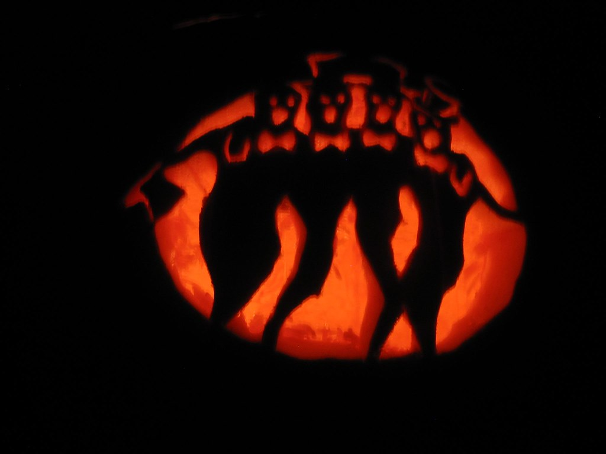

The sounds typically heard are of those that would be found in a typical deep forest. Sometimes it'll be mixed with sounds/songs that Seph plays whenever they happen to stumble upon an instrument. Sometimes even the ghost will join in if they feel like it.
 "The Singing Ghosts" by BenA1974 is licensed under CC BY-NC 2.0